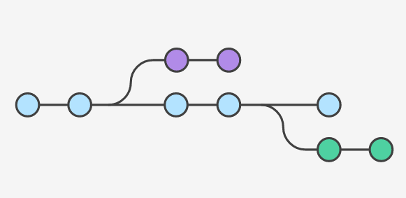

Что такое Система Контроля Версий?
И как оно это все сделает нас счастливее?

Из Wikipedia:
Давайте включим воображение
Вы - разработчик-одиночка
Несколько компьютеров и нужно быстро менять рабочую машинку
Не нужно заботиться о резервном копировании проекта
Возможность заглянуть в историю изменений каждого файла
Экспериментировать, не боясь запустить хаос в свой "идеальный код"
Следить за своим процессом разработки
Автоматизация публикации кода
Вы - работаете в команде
Одновременная разработка одного проекта
Найти кто наговнокодил
Наслаждаться когда другие коммитят
Ревью кода
Интеграция с менеджером задач
(C)VCS vs DVCS = DVCS wins
Centralized Version Control System
Клиент-серверная ирхитектура
CVS (утарел), SVN, Team Foundation Version Control (TFVC)
Decentralized (Distributed) Version Control System
Peer-to-peer ирхитектура
Git, Mercurial, Bazaar
Почему DVCS > (C)VCS
Работа в оффлайне, не нужен сервер чтобы работать с историей и делать коммиты
Дешевое ветвление, быстрый переход между коммитами/ветками и операциями с ними
Центральный сервер не является единой точкой отказа. Вы не потеряете данные если сервер сгорит, даже если не делались бекапы
Возможность работы с удаленным репозиторием через любой удобный протокол обмена файлами: https, ssh, ftp, nfs и т.д.
GIT
"the stupid content tracker" © man git
Немного истории
Linus Torvalds начал разработку Git в апреле 2005 года
16 июня 2015 года с помощью git был сделан релиз ядра Linux
25 декабря того же года увидела свет первая версия Git
Основные моменты Git
Репозиторий
Это информация о всех изменениях в проекте с момента первого коммита
Явным признаком того что данная директория находится под контролем Git - папочка .git в корне проекта
Туда без понимания, как оно устроено, лазить бесполезно, да и вряд ли это когда либо потребуется
Коммит
Коммит - это фиксация изменений в истории проекта

Дерево коммитов
Коммиты выстраиваются в дерево таким образом, что у каждого коммита (кроме первого) есть родительский коммит (а то и несколько)
По дереву можно наглядно продемонстрировать создание кода во времени

Ветка
Указатель на коммит(!), которая продвигается вместе с новыми коммитами
Ветки удобны для распараллеливания работы над проектом

Установка
Установка на windows
Установка на macos
brew install gitУстановка на linux (ubuntu)
apt-get install gitИнициализируем репозиторий
git initДелаем первый коммит
git commit -m 'initial commit'Александр Шухин
Email: a.medium@gmail.com
Telegram: @alex_medium
Github: alexshuhin